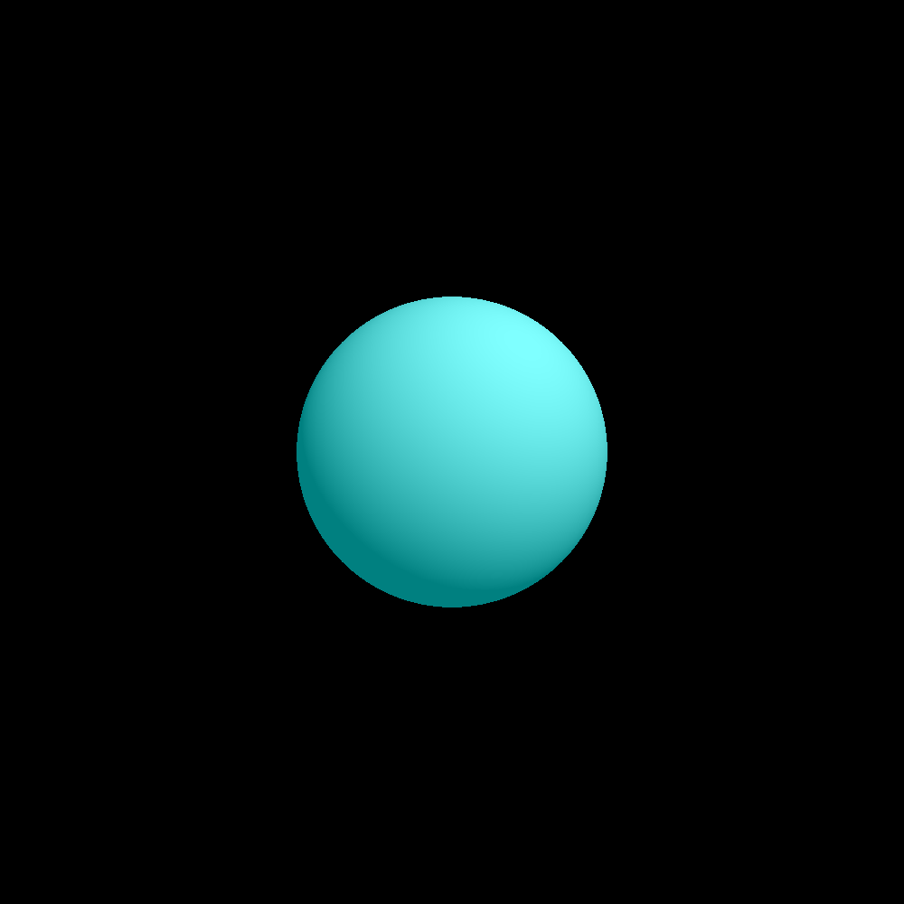
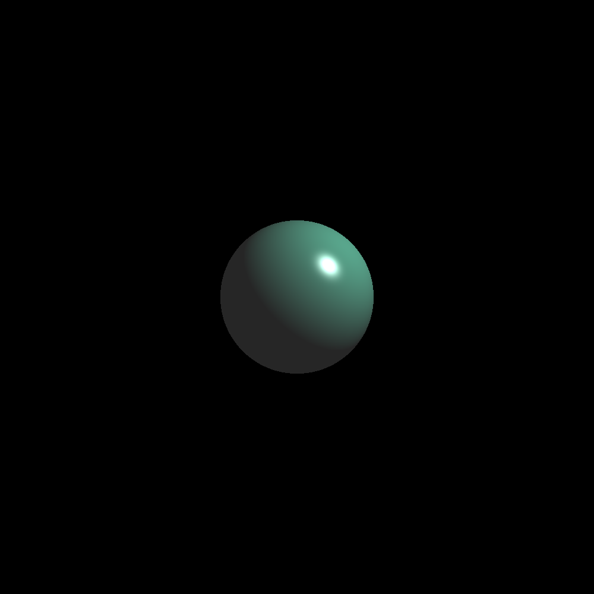
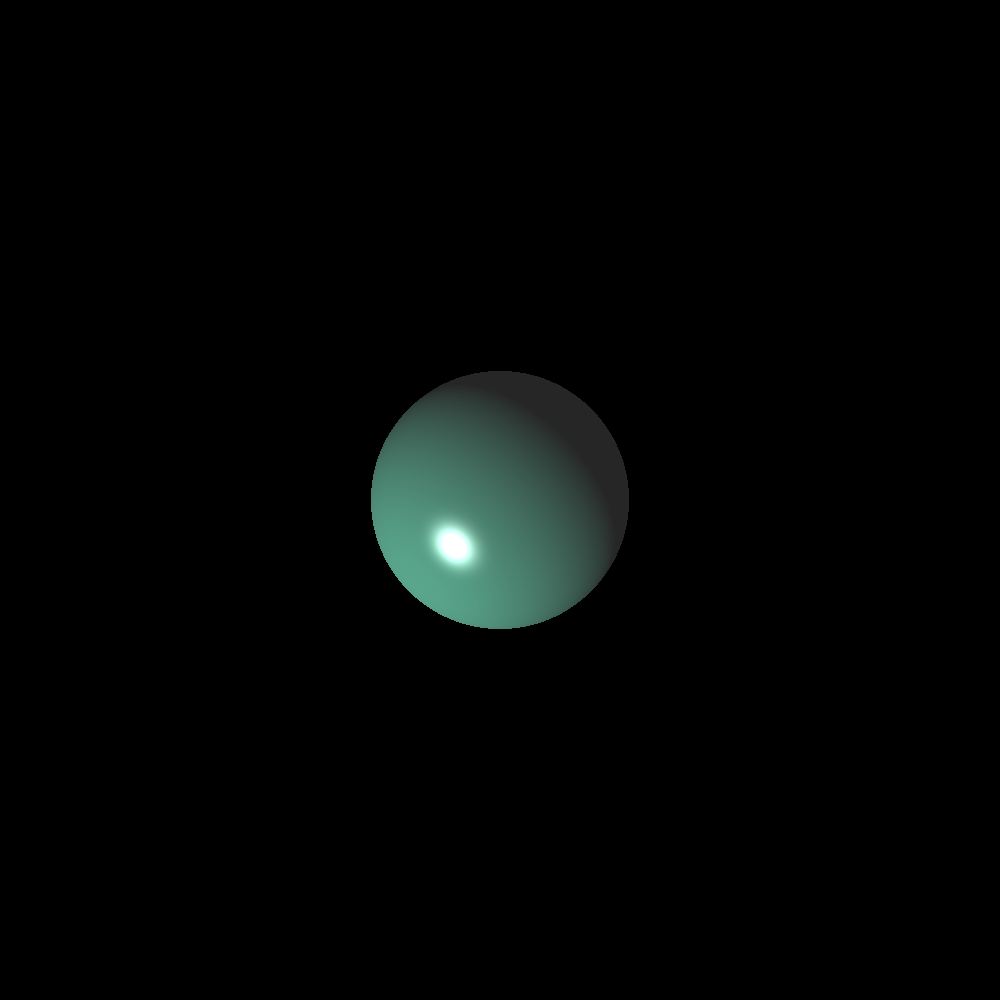
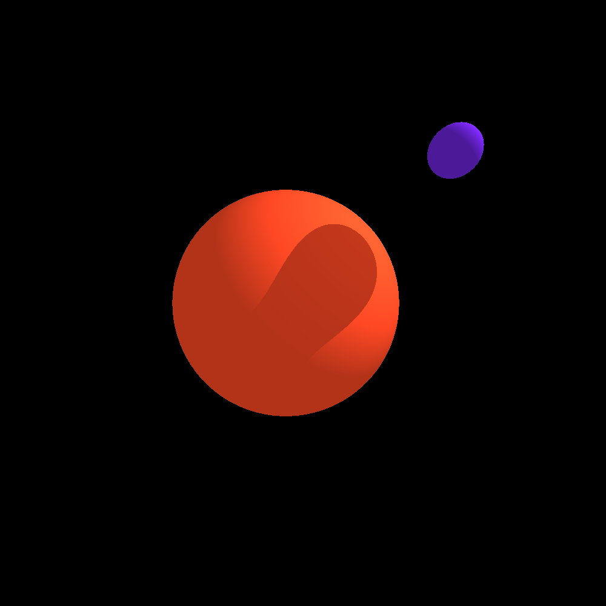
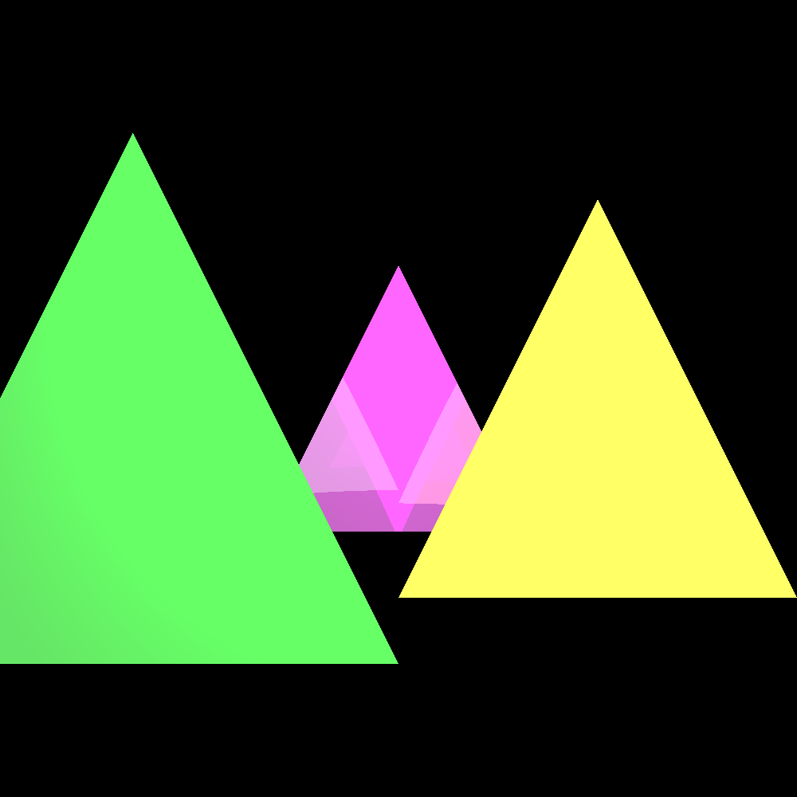
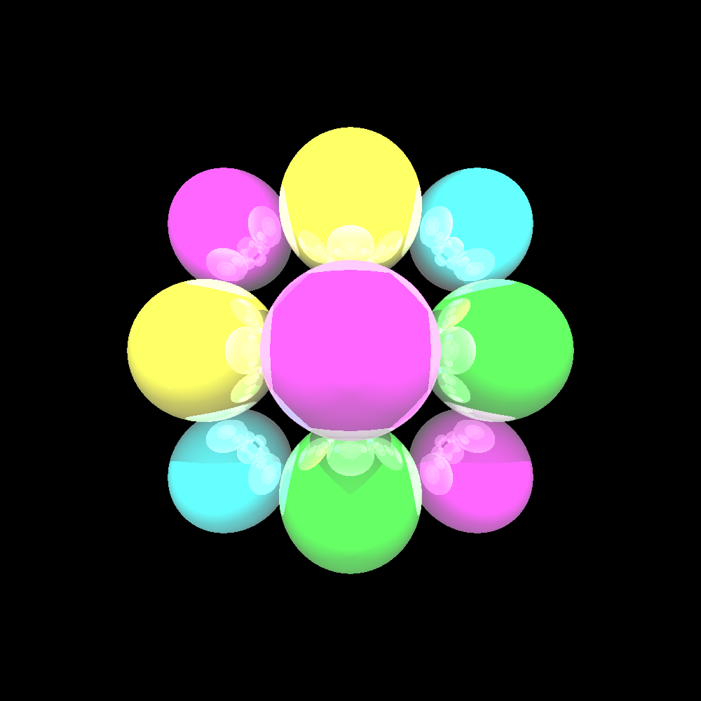
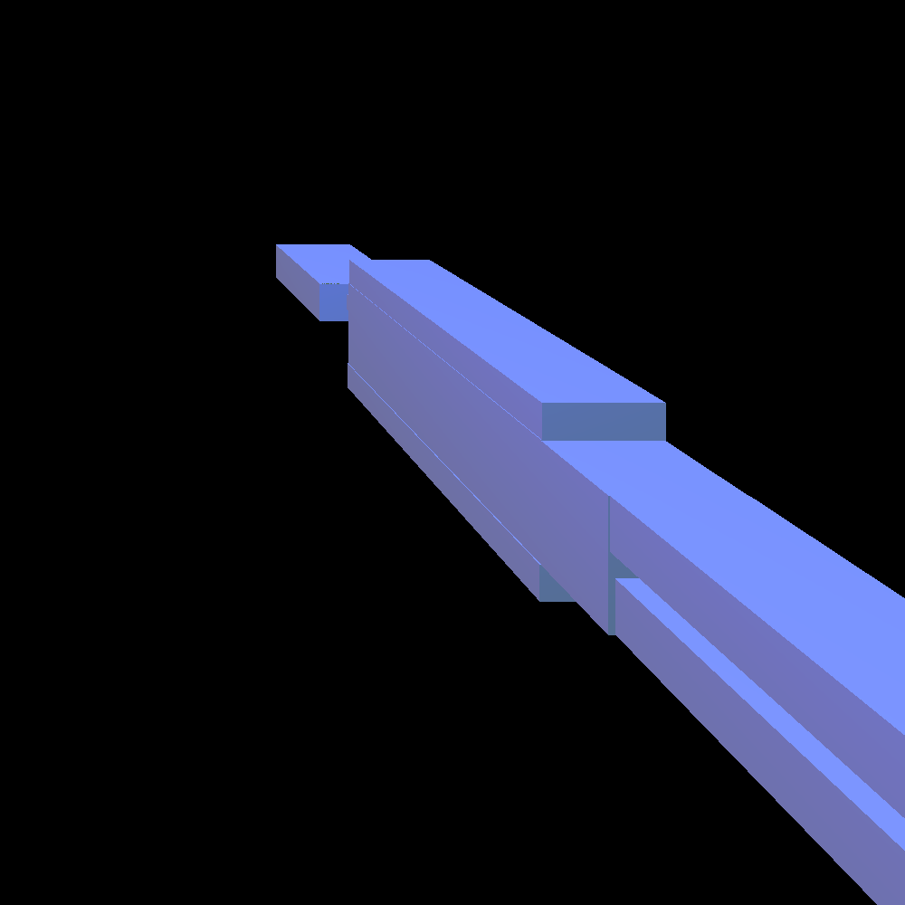
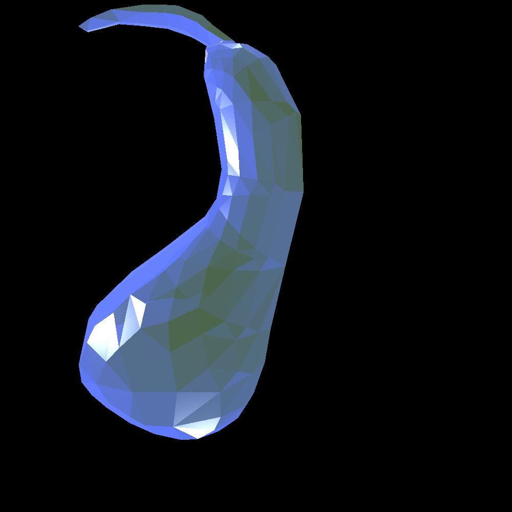

All images are 1000x1000 pixels scaled to 50% for display
Simple Sphere: Diffusion Shading (phong)

cam 0 0 2 -1 -1 1 1 -1 1 -1 1 1 1 1 1
mat 0 0.5 0.5 0.5 0.5 0.5 0 0 0 64 0 0 0
ltp 2 3 4 1 1 1 0
lta 1 1 1
sph 0 0 0 0.65
Simple Sphere: Specular Component (Point Light)

cam 0 0 2 -1 -1 1 1 -1 1 -1 1 1 1 1 1
mat 0.3 0.3 0.3 0.2 0.5 0.4 1 1 1 30 0 0 0
lta 0.5 0.5 0.5
ltp 1 1 1 1 1 1 0
sph 0 0 0 0.5
Simple Sphere: Specular Component (Directional Light)

cam 0 0 2 -1 -1 1 1 -1 1 -1 1 1 1 1 1
mat 0.3 0.3 0.3 0.2 0.5 0.4 1 1 1 30 0 0 0
lta 0.5 0.5 0.5
ltd 1 1 -1 1 1 1 0
sph 0 0 0 0.5
Simple Spheres: Shadow

cam 0 0 2 -1 -1 1 1 -1 1 -1 1 1 1 1 1
mat 0.7 0.2 0.1 0.7 0.2 0.1 0 0 0 64 0 0 0
ltp 1 1 1 1 1 1 0
lta 1 1 1
sph -0.1 0 0 0.7
mat 0.3 0.1 0.6 0.3 0.1 0.6 0 0 0 64 0 0 0
sph 0.6 0.6 0.8 0.1
Triangle: Reflections (4 sec; depth 3)

cam 0 0 2 -1 -1 1 1 -1 1 -1 1 1 1 1 1
mat 1 1 1 .5 0 .5 0 0 0 64 .2 .2 .2
ltp 1 1 1 1 1 1 0
ltp -1 1 1 1 1 1 0
ltd 0 0 -1 1 1 1
lta 0.4 0.4 0.4
tri 0 1 -1 -1 -1 -1 1 -1 -1
mat 1 1 1 .5 .5 0 0 0 0 64 .2 .2 .2
tri 1 1 0 0 -1 0 2 -1 0
mat 1 1 1 0 .5 0 0 0 0 64 .2 .2 .2
tri -1 1 0.5 -2 -1 0.5 0 -1 0.5
Sphere: Reflections (10 sec; depth=3)

cam 0 0 2 -1 -1 1 1 -1 1 -1 1 1 1 1 1
mat 1 1 1 .5 0 .5 0 0 0 64 .4 .4 .4
ltp 1 1 1 1 1 1 0
ltp -1 1 1 1 1 1 0
ltd 0 0 -1 1 1 1
lta 0.4 0.4 0.4
sph 0 0 0 .5
sph 1 -1 -1 .5
sph -1 1 -1 .5
mat 1 1 1 .5 .5 0 0 0 0 64 .5 .5 .5
sph 0 1 -0.5 .5
sph -1 0 -0.5 .5
mat 1 1 1 0 .5 0 0 0 0 64 .5 .5 .5
sph 0 -1 -0.5 .5
sph 1 0 -0.5 .5
mat 1 1 1 0 .5 .5 0 0 0 64 .5 .5 .5
sph -1 -1 -1 .5
sph 1 1 -1 .5
Obj File: Looming Human (~ 30 seconds)
OBJ file provided by: http://people.sc.fsu.edu/~jburkardt/data/obj/obj.html

cam -10 20 0 -10 -20 10 10 -20 10 -10 20 10 10 20 10
mat 0.3 0.4 0.3 .1 .1 .9 1 1 1 64 1 .5 .5
ltd 0 -1 0 1 1 1 0
ltp -10 20 0 1 1 1
ltd 1 0 0 .9 0 0
lta 1 1 1
obj humanoid.obj
Obj File: Blue Gourd (~ 2 minutes)
OBJ file provided by: http://people.sc.fsu.edu/~jburkardt/data/obj/obj.html

cam 0 0 2 -1 -1 1 1 -1 1 -1 1 1 1 1 1
mat 0.3 0.4 0.3 .1 .1 .9 1 1 1 64 1 .5 .5
ltd 0 -1 0 1 1 1 0
ltd 1 0 0 1 1 1
ltd 0 1 0 1 1 1
ltd 0 0 1 1 1 1
lta 1 1 1
obj gourd.obj